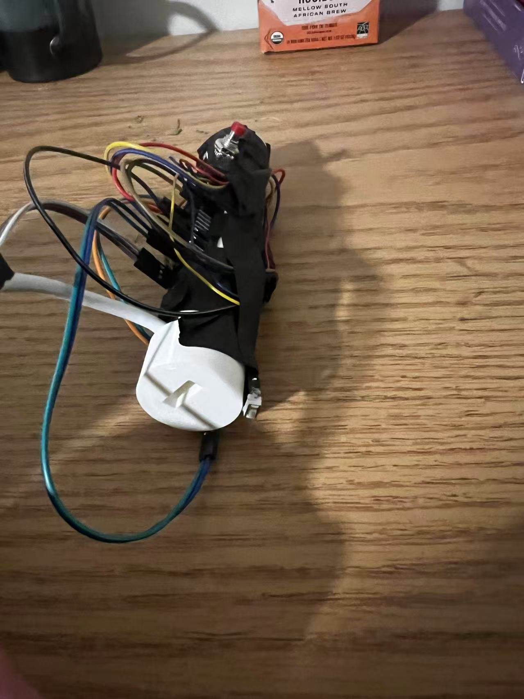

3D Orientation Mouse
Adin Moskowitz (am2736) and Siang Peng (sp2222)
Project Introduction
We created a handheld 3D orientation mouse that uses IMU motion and orientation quaternions for two practical computer interfaces: a “laser pointer mouse” where pointing the device controls the on-screen cursor, and a “3D mouse” for SolidWorks, where rotating the device live-rotates a CAD model view.
We used an MPU6050 6-axis IMU (3-axis accelerometer + 3-axis gyroscope) connected to an RP2040 microcontroller to record 3D orientation of our device. On the RP2040, we estimate the device’s full 3D orientation using a quaternion-based pipeline (gyro integration with accelerometer-based tilt correction). This quaternion orientation is then used for two functions:
- Pointer Mode: We compute the device’s pointing direction from the quaternion and map that direction to cursor motion, similarly to products like TV “air remotes.”
- CAD Mode: We stream orientation data over serial to a PC program, which converts our device’s orientation into SolidWorks or AutoCAD view rotations, allowing for continuous 3D view manipulation.
To make the device easily usable, we designed and fabricated a 3D-printed enclosure with dedicated mounting for the RP2040 and IMU. The device includes three debounced buttons for user input: one for mouse left-click, one for manual drift correction, and one for entering the RP2040’s BOOTSEL mode for easy reprogramming.
High Level Design
Motivation For Project
Our motivation for this project was to build a handheld device that fully utilizes the IMU capabilities of the MPU6050, explores the use of quaternions to track 3D rotations, and expands the basic functions of USB mouse control. Inspired by consumer devices such as the LG Magic Remote and the Wii remote, which let users control an on-screen cursor by pointing and rotating a handheld controller. We wanted to recreate a similar user experience for a computer by creating a 3D mouse that maps its pointing direction to an (x,y) cursor position on the screen, enabling remote mouse control for tasks like navigating a desktop, using their computer like a TV, or for better interaction with slides during presentations.
We were also inspired by 3D CAD devices such as the SpaceMouse, which make it much easier to manipulate a model’s view. However, traditional CAD controllers are designed for use on a desk. We wanted to combine concept of the SpaceMouse with our 3D controller, allowing a user to rotate the device in their hand (in the air) to live rotate the CAD view directly.
Relavent Math
Quaternions vs. Euler Angles
While Euler angles (Roll, Pitch, and Yaw) are the most intuitive way to visualize rotation, they have a few limitations which make them unsuitable for 3D orientation and rotation tracking:
- Gimbal Lock:Euler angles have a mathematical singularity (at 0 or 90 degrees) where two of the three axes align, causing the system to "lock," losing a degree of freedom and making it impossible to track rotations around the third axis independently.
- Multiple Interpolations: The other issue with Euler angles is that there are multiple (up to 12) possible orders for applying Euler rotations to get to the same final orientation, leading to computational issues with tracking. This also causes issues with smoothly transitioning between two orientations, leading to jerky or unnatural movements.
Here is a funny example of an interpolation issue in graphics caused by using Euler angles:
Because of these issues, we represent orientation using a unit quaternion, a 4-dimensional mathematical object $q=(w,x,y,z)$ where w is the real component and (x, y, z) are the imaginary components. For our calculations we use unit quaternions which are normalized, meaning $\sqrt{w^{2}+x^{2}+y^{2}+z^{2}}=1$.
This mathematical representation avoids the Euler angle issues of gimbal lock and rotational interpolation. Additionally, quaternions allow for Spherical Linear Interpolation (Slerp), which creates smooth, constant transitions between two orientations, making them a smoother representation of rotational motion.
Axis-Angle Representation
Quaternions use the idea that every rotation in space has an axis of rotation. We can use this idea to compute a rotation quaternion $q$. Any rotation can be represented by a single rotation, around a specific unit axis in space $(u=u_{x},u_{y},u_{z})$ given by the equation: $$q=(cos\frac{\theta}{2},u_{x}sin\frac{\theta}{2},u_{y}sin\frac{\theta}{2},u_{z}sin\frac{\theta}{2})$$
Computing Rotations
We can represent 3D vectors with quaternions by setting the real part, $w$, to 0:
$q_{u}=0+u_{x}i+u_{y}j+u_{z}k$
We can apply a 3D rotation to a vector in $u$ in quaternion form $q_{u}$ with the equation:
${q^{\prime}}_{u}=qq_{u}q^{-1}$
where ${q^{\prime}}_{u}$ is the rotated vector, $q$ is the rotation quaternion defined above, and $q^{-1}$ is its inverse defined as:
$q^{-1}=(w,-x,-y,-z)$
Quaternion Multiplication
The rotation equation uses quaternion multiplication where the product of two quaternions \(q_1\) and \(q_2\) is defined as:
\[ \begin{aligned} q_1 q_2 = ( & w_1 w_2 - x_1 x_2 - y_1 y_2 - z_1 z_2, \\ & w_1 x_2 + x_1 w_2 + y_1 z_2 - z_1 y_2, \\ & w_1 y_2 - x_1 z_2 + y_1 w_2 + z_1 x_2, \\ & w_1 z_2 + x_1 y_2 - y_1 x_2 + z_1 w_2 ) \end{aligned} \]It is important to note that quaternion multiplication is non-commutative, meaning the order of multiplication matters.
Filtering
In addition, we used complementary filtering to fuse gyroscope and accelerometer data: $$q_{est} = \alpha \cdot q_{gyro} + (1 - \alpha) \cdot q_{accel\_correction}$$ We also used low-pass filtering to smooth cursor motion with the equation: $$x_{smoothed} = s \cdot x_{previous} + (1 - s) \cdot x_{current}$$ where $s$ is the smoothing factor.
Logical Structure
The general structure of the code can be broken down as follows:
1. Interrupt Service Routine
We use a PWM wrap interrupt as a periodic timer to run the interrupt service routine code at around 1.2kHz. At each interrupt we read raw accelerometer and gyroscope data, store them in shared variables, and signal an IMU thread to update the attitude estimation.
3. IMU Thread
The IMU thread is signaled each time we read new IMU data. It primarily runs the imu_update() function to compute the new orientation quaternion from the accelerometer and gyroscope readings.
4. Cursor and CAD Control
The device can switch between two modes. The first is CAD Mode, where the device controls the orientation of a CAD model on the user's PC. The second is Pointer Mode, where the device controls the cursor location on the user's PC.
4.1 Pointer Mode
In Pointer Mode, we make the RP2040 act as a USB device to the user's PC. We map the orientation of our device to a delta x and y position on the PC screen and output that to the computer as a mouse signal. We also check if the user pressed the calibration or the mouse left click button and output the corresponding signal.
4.2 CAD Mode
In CAD Mode, the RP2040 acts as a serial device where we output the most recent orientation quaternion over serial to the PC. The PC then runs a Python program to manipulate the camera view of an open CAD model to match the orientation of our device.

Hardware/software tradeoffs
The main tradeoff we ran into was system complexity versus long-term orientation accuracy. Our current design uses a 6-axis IMU (accelerometer + gyroscope). The accelerometer provides a stable long-term reference because it can measure the direction of the gravity vector, so it does not accumulate drift. However, the gyroscope, which measures angular velocit,y has an issue of dead reckoning, meaning its orientation estimate is always relative to its initial value and will drift as small bias errors accumulate.
To get the best of both sensors, we use a complementary filter: the gyroscope provides smooth short-term motion, and the accelerometer slowly corrects long-term tilt. This works for pitch and roll, because the gravity vector provides a reference direction to correct drift on those axes. However, yaw rotates perpendicularly to the gravity axis, so gravity does not change during yaw motion. Therefore, yaw cannot be corrected using the accelerometer alone, and it will drift over time if we rely only on the gyroscope.
One common solution is to add a magnetometer (using a 9-axis IMU) to provide an absolute heading reference and correct yaw drift (either by using the earth’s magnetic field or a magnet placed near the user). However, one of the issues with magnetometers is that they require heavy calibration, due to environmental magnetic interference, and would be too complex for the scope and timeline of this project. Instead, we adopted a simple user-friendly approach with manual re-centering calibration during use to manage yaw drift.
From a computational standpoint, we had no major constraints. The project is primarily user experience oriented, so our target update rate was around 100 Hz, which is well within the RP2040’s capabilities for quaternion calculations, filtering, and calculations for the different modes of the device.
Intellectual Property Concerns: Patents, Copyrights, and Trademarks
There are no patents, copyrights, or trademarks associated with the methods we used. Any of the quaternion math and orientation calculation methods were obtained from public-domain sources. We use products such as SOLIDWORKS, AutoCAD, MPU-6050, and VS Code (with the TinyUSB library) for our project.
Hardware Design
Program Details
1. Main
The main function simply initializes the IMU, GPIO, I2C communication, threads, etc.
2. PWM ISR
The PWM ISR runs at a set frequency of around 1.2kHz. It first reads raw gyroscope and accelerometer values from the MPU6050. Then it converts the raw values into floating-point numbers and converts the gyroscope values from degrees to radians, which is necessary for the orientation quaternion calculations. The ISR then uses a semaphore to signal the IMU thread that new data is ready.
3. IMU Thread
The IMU thread waits on the semaphore signal from the ISR that new IMU data is ready. We then perform an important calculation of the time elapsed since we last ran the thread. When we process the IMU data, we must integrate the gyroscope, so we need an accurate record of the time that passed since our last used reading and the current reading. We must calculate this value within the IMU thread each iteration since this thread does not necessarily run at the same rate as the ISR so we can’t just use the frequency that the ISR runs at (we first ran under this assumption and noticed that the dt value was around 2.5x the actual value). We then run the imu_update(gx, gy, gz, ax, ay, az, dt) function (which lives in the quat_math.c file) to calculate the orientation quaternion based on dt and the new IMU data. This gives us the device’s new orientation.
4. Blink Thread
The Blink thread simply toggles the onboard LED on and off to help us see that the program is running correctly.
5. Mouse Thread (Pointer Mode)
The Mouse thread runs at a preset rate of 100Hz. In essence, it uses the IMU quaternion to determine the motion of the cursor on the user’s PC. This thread handles the Pointer Mode of the device. It is important to note that in this mode, we make the RP2040 appear as a simple USB device (in this case, a mouse) to the PC. We did this by adapting the dev_hid_composite example that can be found at (https://github.com/raspberrypi/pico-examples/tree/master/usb/device/dev_hid_composite).
In this thread, we calculate the rotation of the device relative to the center of the screen (defined as the direction of the y-axis of the IMU when it is powered on), work out dx and dy values, then it send out the data over USB mouse report. We also check for manual use calibrations and user left clicks (of the red button).
Manual calibrations are done by simply holding down the small side button (which freezes cursor movement), reorienting the device so it is pointing directly at the cursor, then releasing the button. In the code, this sets the new center position for cursor calculations to the position that you are ponting the pen after you release the button. Left clicks are done by pressing the large red button on the top of the device, which sends a left-click HID report to the PC.
Calculation of Cursor Movement: First, we alculate horizontal and vertical angles relative to the center position (defined above) using the arctangent function: $\text{h_angle} = atan2f(d.x, d.y);$ $\text{v_angle = atan2f(d.z, sqrtf(d.xd.x + d.yd.y))}$. Then multiply by a constant to convert to screen displacement. Here we use 2000. A bigger value causes faster mouse motion on screen, meaning the value should be larger if the device is closer to the screen. Through testing, 2000 works well at half a meter. The multiplied values are named $\text{cursor_x}$ and $\text{cursor_y}$.
To make pointer movement smooth, a buffer similar to low-pass filtering is applied. For the x direction:
$\text{smooth_x = 0.8f * smooth_x + 0.2f * cursor_x;}$
$\text{final_x = 0.8f * prev_x + 0.2f * smooth_x}$.
This has two steps: the first layer keeps 80% of the previous smooth value and adds 20% of the new cursor value; the second layer keeps 80% of the last output and adds 20% of the first layer result.
We use $\text{final_x - prev_x}$ to get the x displacement for the HID report; y direction is the same. Finally, the TinyUSB library (tinyusb.org) function $\text{tud_hid_mouse_report()}$ is used to send the mouse movement command.
6. Print Thread (CAD Mode)
The Print thread also runs at 100Hz, and essentailly grabs the most recent orientation quaternion and sends it over the serial port to the PC. A python script on the PC then records these values and converts them to CAD view orientations. This thread handles the CAD Mode of the design. It is important to note that in this mode the RP2040 appears as a Serial device to the computer (not as a USB device like in Pointer Mode).
7. Orientation Quaternion Calculation (quat_math.c)
Next, we explain in detail how the IMU readings are converted into a quaternion and how small rotation changes are represented. To make the process clear, we start by explaining the implementation of the key function imu_update().
Step 1: Using gyroscope data to predict orientation qw
The MPU6050 provides angular velocity readings gx, gy, and gz from the gyroscope, measured in radians per second. These three values form an angular velocity vector. The magnitude of this vector is calculated to describe how fast the device is rotating.
The rotation axis is obtained by normalizing the angular velocity vector, and the rotation angle is computed by multiplying the angular speed by the time interval dt. Using this rotation axis and angle, the function quat_from_axis_angle is called to create a quaternion qdelta, which represents the small rotation during this time step.
This incremental rotation quaternion is then multiplied with the previous orientation estimate qest. The result is the gyroscope-predicted orientation qw. The quaternion is normalized afterward to prevent numerical drift.
Step 2: Using accelerometer data to compute the tilt correction quaternion qtilt
The accelerometer provides ax, ay, and az, which measure acceleration along the three body axes. These values are normalized to form a unit vector abody_norm. This vector represents the direction of gravity in the device’s body coordinate frame.
The predicted orientation qw is then used to rotate this gravity vector into the world coordinate frame. In the world frame, gravity is defined to point in the fixed direction (0, 0, 1).
The difference between the measured gravity direction and the expected gravity direction is calculated. The angle between them is found using a dot product, and the rotation axis needed to align them is found using a cross product. A complementary filter factor α is applied so that only part of this correction is used. Based on the weighted angle and rotation axis, a tilt correction quaternion qtilt is created.
Step 3: Updating the final orientation quaternion
In the final step, the tilt correction quaternion qtilt is multiplied with the gyroscope-predicted quaternion qw. This produces the updated orientation estimate qest. The result is normalized again to ensure it remains a valid unit quaternion.
At this point, the internal process of imu_update() is complete. Next, a unit direction vector fbody = (0, 1, 0) is defined in the IMU body frame. This vector represents the forward direction of the device and is fixed relative to the sensor.
Finally, the following operation is performed:
d = quat_rotate_vec(q, fbody);
The vector d is obtained by rotating the body-frame forward vector fbody into the world coordinate frame using the current orientation quaternion qest. Therefore, d represents the direction in the real world that the device is pointing toward.
In summary:
- fbody: Defines the forward direction in the device’s own coordinate frame.
- qest: Represents the orientation of the device relative to the world.
- d: Represents the direction in the world that the device is currently pointing.
Next we explain how to control mouse movement using vector d.
First, calculate horizontal and vertical angles using arctangent:
h_angle = atan2f(d.x, d.y);
v_angle = atan2f(d.z, sqrtf(d.x*d.x + d.y*d.y));
Then multiply by a constant to convert to screen displacement. Here we use 2000. A bigger value causes faster mouse motion on screen, meaning the value should be larger if the device is closer to the screen. Through testing, 2000 works well at half a meter. The multiplied values are named cursor_x and cursor_y.
To make pointer movement smooth, a buffer similar to low-pass filtering is applied. For the x direction:
smooth_x = 0.8f * smooth_x + 0.2f * cursor_x;
final_x = 0.8f * prev_x + 0.2f * smooth_x;
This has two steps: the first layer keeps 80% of the previous smooth value and adds 20% of the new cursor value; the second layer keeps 80% of the last output and adds 20% of the first layer result.
We use final_x - prev_x to get the x displacement for the HID report; y direction is the same. Finally, the TinyUSB library (tinyusb.org) function tud_hid_mouse_report is used to send the mouse movement command.
Hardware Details
The pointer is modeled using Autodesk Fusion 360 and 3D printed with a Prusa printer. The overall shape is a cylinder, with a flat cut made along the central axis at a short distance from the center, creating a rectangular plane. On the rectangular plane, we carved out mounting slots for the RP2040 and MPU6050. The RP2040 has dimensions of 51×21 mm, and the MPU6050 measures 1.0×0.7 inches. Additionally, a hole was designed at the bottom of the cylindrical body to accommodate the data cable. The settings used in Prusa Slicer include 20% infill and natural support, with PLA as the material. All other settings are left as default.


Note: This design does not have any strict hardware requirements. Any reasonable method for securing the MPU6050 is acceptable. The MPU6050 used in this model is the black version, not the common blue one typically found on the market. If readers wish to replicate the model, they should ensure they are using the correct MPU specifications.
Hardware overview:
Buttons on the device:

The red button on the top is used for recalibration, and the black button at the bottom is used for simulating a left click.
Trial and Error
Things we tried which did not work
We designed a linkage that could rotate freely, connected to a fixed base, with the goal of allowing the pointer to be inserted and counteract the drift issue in CAD mode. However, due to the limited precision of the 3D printer, the linkage was unable to rotate freely within the base. As a result, we abandoned this solution and instead allow the pointer to rotate freely in space during CAD mode.
Testing and Result
Initially, before using the IMU, we tested using a physical button to simulate USB input, moving the cursor to the bottom-right corner, which verified the feasibility of the TinyUSB library. After adding the IMU and related code, we tested dragging a webpage tab, confirming that our finished product can effectively control cursor position and simulate left-clicks and long presses.
Results of the Design and Conclusions
Design Analysis
The yaw direction measured by the IMU tends to drift. This happens because the accelerometer can only measure directions constrained by gravity. The yaw direction rotates around the gravity axis and therefore cannot be observed by the accelerometer. In our approach, yaw is mainly obtained by integrating gyroscope data. Without correction from the accelerometer, drift gradually appears.
In addition, even with low-pass filtering applied, the gyroscope remains sensitive to small vibrations. This effect is most noticeable in CAD mode. When the pointer is rotated, the model on the screen shows small jitters during motion. After long periods of operation, even if the pointer stays in the same physical position, the CAD model may drift to a different orientation.
One solution we considered is adding a magnetometer. By using the Earth’s magnetic field, it would be possible to obtain a more accurate yaw reference.
Applicable Sandards
The project does not require compliance with formal regulatory standards. Nevertheless, it follows common engineering practices and basic safety requirements.
AI Assistance
In this project, AI was mainly used to help write lens control scripts for Autodesk Fusion360 and SolidWorks. While we were not fully familiar with the APIs and scripting methods of these programs, AI helped generate functional scripts efficiently.
Appendices
Appendix A: Permissions
"The group approves this report for inclusion on the course website."
"The group approves the video for inclusion on the course youtube channel."
Appendix B: Source Code
All code is provided in quat_math.c and main.c
Appendix C: References
EE 267 Virtual Reality. Course Notes: 3-DOF Orientation Tracking with IMUs.
https://stanford.edu/class/ee267/notes/ee267_notes_imu.pdf
Appendix D: Work Distribution
Adin: Mainly responsible for USB signal simulation and quaternion calculations.
Siang: Mainly responsible for 3D design and printing, as well as CAD software control.